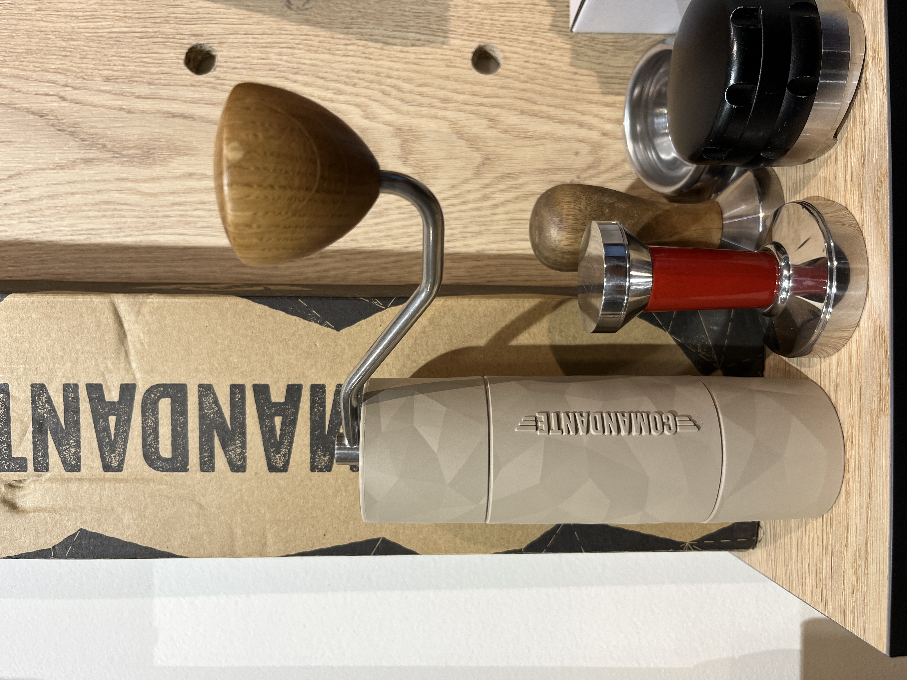

En Sabor Maestro no solo vendemos café; queremos que tu experiencia sea completa. Descubre nuestras cafeteras, molinillos y accesorios cuidadosamente seleccionados, pensados para que prepares un café de especialidad en casa con la misma dedicación que un barista profesional.
Cada complemento que ofrecemos refleja nuestra filosofía: calidad, funcionalidad y respeto por el sabor del café. Desde equipos profesionales hasta accesorios que facilitan la rutina diaria, tenemos todo lo que necesitas para disfrutar de cada taza.